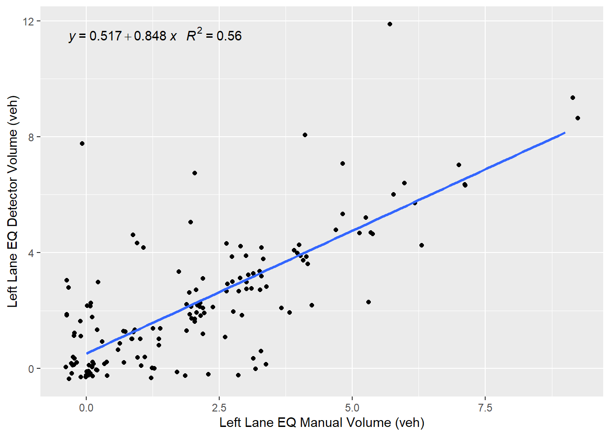
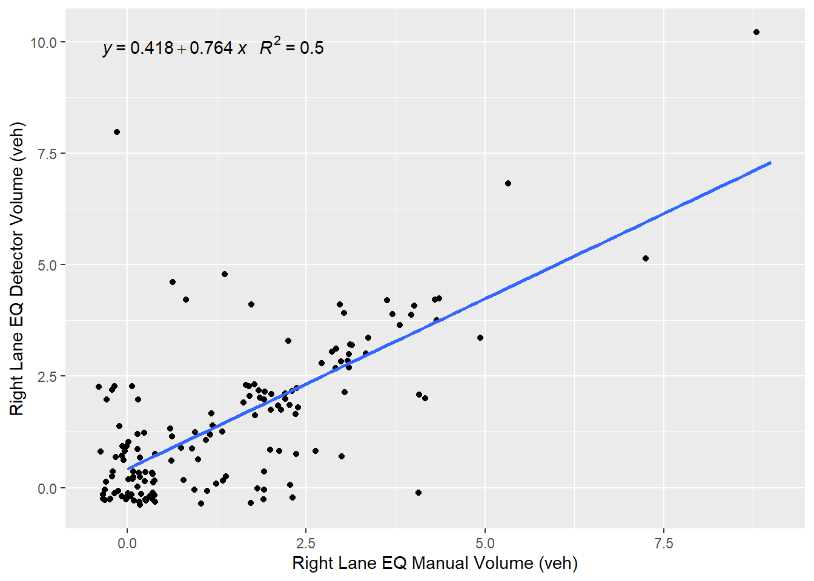
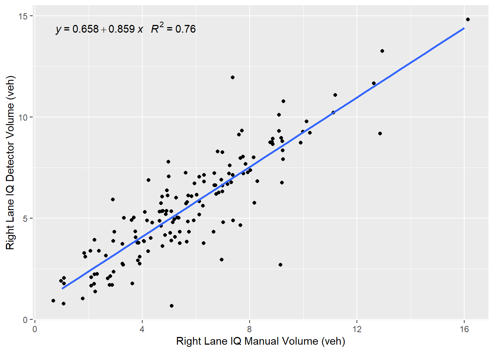
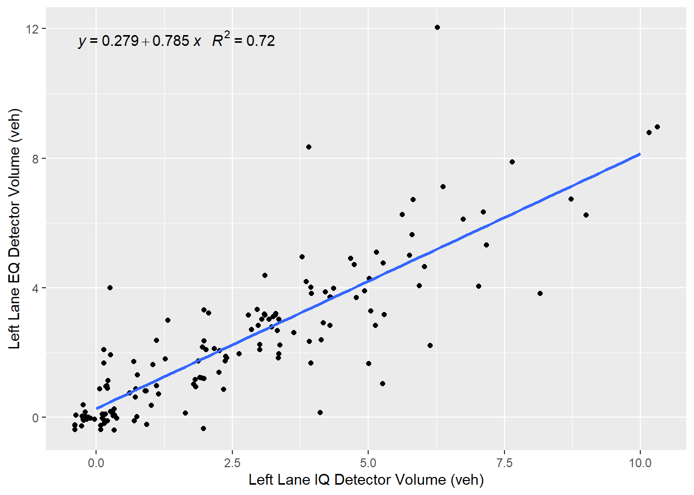
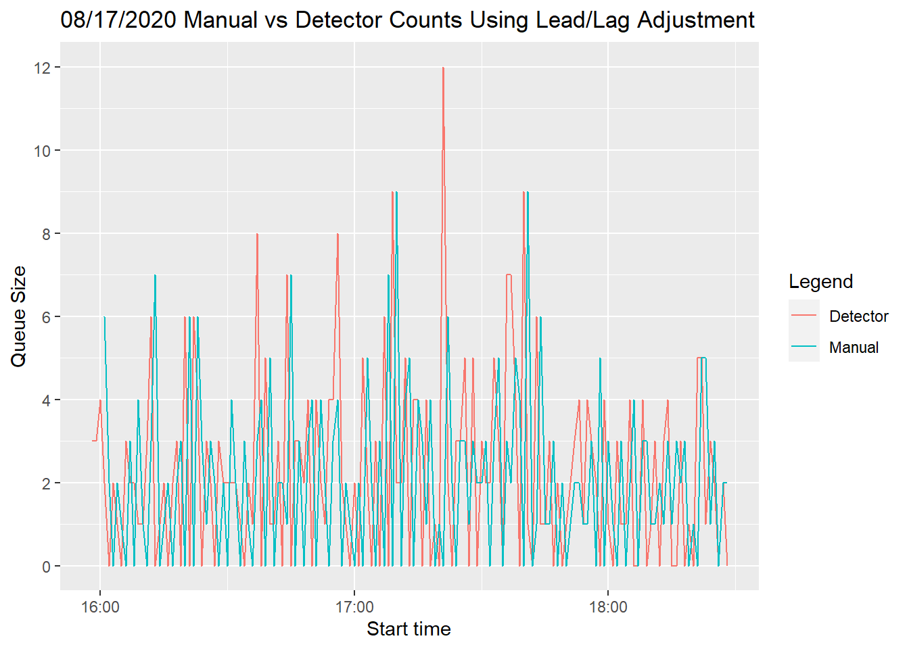

Chapter 5 Data Collection and Analysis
5.1 Site Description
The Layton Parkway northbound on-ramp to I-15 has two lanes entering the on-ramp from the west (two lanes turning left onto the ramp) and one lane entering the ramp from the east (one right turn lane). The left turn lanes are controlled by a left-turn only phase at the traffic signal; there is no permitted phase for this turning movement. The right turn lane is free at the entrance to the ramp, but approximately 150 feet into the ramp, there is a yield sign, as this lane ends and must merge with the lane to its left. The ramp is about 540 feet long from the entrance to the ramp meter signal. The ramp metering rate is adaptive, as the ramp metering algorithm used by UDOT automatically modifies the rate based on detector data.
5.2 Data Collection
Five days of data collection were conducted during the PM metering period of 4:00 - 6:30 PM in August of 2020. The data from UDOT is collected via loop detectors at three locations along the on-ramp: near the on-ramp entrance (referred to as “excessive queue” in this report), in the middle of the ramp (“intermediate queue”), and just past the ramp meter signal (“passage”). These data are given in one-minute periods (e.g. 4:00:00 - 4:01:00 PM) in each lane and they include the vehicle volume, the detector occupancy, the number of lanes, and the ramp metering rate.
The detector data are compared with manual traffic counts of these five days, which are also recorded in one-minute periods in each lane. The manual counts include the number of vehicles entering each lane at the excessive queue detectors as well as the queue size at the ramp meter signal at the end of each one-minute period. For example, if from 4:00:00 to 4:01:00 PM, 5 vehicles entered the far left lane, 4 vehicles from the middle lane, and 3 vehicles entered from the right lane, each lane’s count during that one minute would be recorded, and the total number of vehicles entering the ramp during that minute is 12 vehicles. In addition, at 4:01:00 PM, the total queue size at the signal for all lanes is also recorded; perhaps at 4:01:00 PM, the queue size is 7 vehicles. Assuming there was no queue previous to this period, that therefore means that 5 of the 12 vehicles were able to enter the freeway between 4:00:00 and 4:01:00 PM. During the next time period, if a total of 10 new vehicles entered the ramp and at 4:02:00 PM, the queue size was 9 vehicles, that would mean that 9 vehicles would have entered the freeway during that time: the 7 vehicles from the previous time period, plus an additional 2 vehicles that entered the ramp during this time period.
5.3 Data Analysis
The data collected from the five days were first analyzed to determine whether the detectors were accurate.The data for August 17, 2020 is shown below in Figure .This plot shows a comparison between the
layton_08_17_2020 <- read_excel("data/layton_08_17_2020.xlsx")
# Compare lane 1 EQ auto and manual counts
formula1 <- y ~ x
eq1 <- ggplot(layton_08_17_2020,aes(Manual_EQ_1.2,Auto_EQ_1)) + geom_jitter() +
xlab("Left Lane EQ Manual Volume (veh)") + ylab("Left Lane EQ Detector Volume (veh)") +
geom_smooth(method="lm",se=FALSE) +
stat_poly_eq(formula=formula1,aes(label=paste(..eq.label..,..rr.label..,sep="~~~")),parse=TRUE)
print(eq1)
# Compare lane 2 EQ auto and manual counts
eq2 <- ggplot(layton_08_17_2020,aes(Manual_EQ_3,Auto_EQ_2)) + geom_jitter() +
xlab("Right Lane EQ Manual Volume (veh)") + ylab("Right Lane EQ Detector Volume (veh)")+geom_smooth(method="lm",se=FALSE) +
stat_poly_eq(formula=formula1,aes(label=paste(..eq.label..,..rr.label..,sep="~~~")),parse=TRUE)
print(eq2)
#Compare intermediate and excessive queue counts
q1 <- ggplot(layton_08_17_2020,aes(Auto_IQ_1,Auto_EQ_1)) +
xlab("Left Lane IQ Detector Volume (veh)") + ylab("Left Lane EQ Detector Volume (veh)") +
geom_jitter()+geom_smooth(method="lm",se=FALSE)+
stat_poly_eq(formula=formula1,aes(label=paste(..eq.label..,..rr.label..,sep="~~~")),parse=TRUE)
print(q1)
q2 <- ggplot(layton_08_17_2020,aes(Auto_IQ_2,Auto_EQ_2)) +
xlab("Right Lane IQ Detector Volume (veh)") + ylab("Right Lane EQ Detector Volume (veh)") +
geom_jitter()+geom_smooth(method="lm",se=FALSE)+
stat_poly_eq(formula=formula1,aes(label=paste(..eq.label..,..rr.label..,sep="~~~")),parse=TRUE)
print(q2)
layton_08_17_2020 <- read_excel("data/layton_08_17_2020.xlsx")
layton_08_17_2020 %>% transmute(`Start time`, Detector = Auto_EQ_1, Manual = lag(Manual_EQ_1)) %>%
gather(key = "Legend", value = "Queue Size", -`Start time`) %>%
ggplot(aes(x = `Start time`, y = `Queue Size`, color = `Legend`)) +
geom_line() +
ggtitle("08/17/2020 Manual vs Detector Counts Using Lead/Lag Adjustment") +
scale_y_continuous(breaks=c(0,2,4,6,8,10,12,14,16,18,20))
rmse_lag <- function(auto, manual, nlags){
n <- 0
manual_lag <- manual
if(nlags > 0){
while(n < nlags){
manual_lag <- lag(manual_lag)
n <- n + 1
}
} else if(nlags < 0){
#if nlags is negative, use lead
while(n < -1 * nlags){
manual_lag <- lead(manual_lag)
n <- n + 1
}
}
sqrt(mean((auto - manual_lag)^2, na.rm = TRUE))
}
layton_08_17_2020 %>%
summarise(
lead3 = rmse_lag(Auto_EQ_1, Manual_EQ_1, -3),
lead2 = rmse_lag(Auto_EQ_1, Manual_EQ_1, -2),
lead1 = rmse_lag(Auto_EQ_1, Manual_EQ_1, -1),
none = rmse_lag(Auto_EQ_1, Manual_EQ_1, 0),
lag1 = rmse_lag(Auto_EQ_1, Manual_EQ_1, 1),
lag2 = rmse_lag(Auto_EQ_1, Manual_EQ_1, 2),
lag3 = rmse_lag(Auto_EQ_1, Manual_EQ_1, 3)
)## # A tibble: 1 x 7
## lead3 lead2 lead1 none lag1 lag2 lag3
## <dbl> <dbl> <dbl> <dbl> <dbl> <dbl> <dbl>
## 1 2.97 2.73 3.45 1.54 3.28 3.13 2.79data.table( name=c(“lead3”,“lead2”,“lead1”,“None”,“lag1”,“lag2”,“lag3”), value=c(“2.97”,“2.73”,“3.45”,“1.54”,“3.28”,“3.13”,“2.79”) )
The assessment of the accuracy of the detector data was done in several ways; first, by comparing the detector volume data to the detector occupancy data; comparing these two data sources, it allowed to assess whether the conversion automatically done by the detectors to produce an estimate for volume correlated with the detector occupancy data.